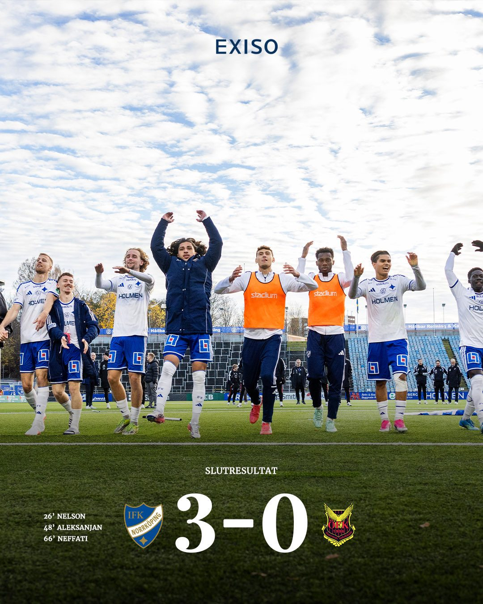

Sport
Falkenberg tillbaka i Allsvenskan – men tränaren Christoffer Andersson lämnar efter uppflyttningen

Falkenbergs FF vände 0–1 till 2–1 hemma mot Sandviken och är klart för Allsvenskan 2027, med en omgång kvar av Superettan. Alexander Salo nickade in segermålet i 81:a minuten. Därmed går Falkenberg upp tillsammans med IFK Norrköping, som var klart sedan tidigare. Två dagar efter uppflyttningen meddelade klubben att tränaren Christoffer Andersson inte får nytt kontrakt, och Svenska Fotbollförbundet har gratulerat båda klubbarna till platserna i Allsvenskan 2027.
Falkenbergs FF är tillbaka i Allsvenskan. På lördagen låg laget under med 0–1 hemma mot Sandviken, men vände till 2–1, och enligt The White Page var det Alexander Salo som nickade in segermålet i 81:a minuten. Fotbollskanalen visade nicken, och strax efteråt kunde SVT Sport slå fast att Falkenberg spelar i Allsvenskan 2027. Det står klart med en omgång kvar av Superettan.
En lång väg tillbaka
Enligt kontot Szwedzka Piłka, som bevakar svensk fotboll, kommer Falkenberg tillbaka efter sex år, varav tre i division 1, alltså den tredje högsta nivån. Kontot kallar det en ovanligt svår väg tillbaka. Senast laget var i Allsvenskan var 2019, och en Djurgårdssupporter påminner om att det var i Falkenberg som Djurgården säkrade guldet det året, med 3–0.
Reaktionerna på X är i huvudsak gratulationer, men också en del tvivel. Några supportrar tror att laget får det tufft nästa år, och en supporter menar att Falkenberg utan Albin Andersson skulle ta högst 15 poäng. Övergångssajten Fotbolltransfers ställer redan frågan om lagets stjärna blir kvar. Klubben själv har vi inte sett kommentera spelarfrågorna.

Norrköping direkt tillbaka
Falkenberg följer med IFK Norrköping upp. Norrköping var klart för spel i högsta serien redan före lördagen. "Vi är hemma, kamrater", skrev klubben i torsdags. I lördags avslutade laget hemmasäsongen med att vinna med 3–0, med tre olika målskyttar och nolla bakåt, enligt IFK Norrköping.
SvenskaFans lyfter att lördagen också bjöd på målrika segrar för Nordic United och Värnamo. Ett Hammarbykonto noterar en detalj: två spelare från samma ungdomslag i Hammarby, Elias Mohammad och Elias "Bobo" Jemal, är nu båda klara för Allsvenskan, med Falkenberg respektive Norrköping.
Vad händer nu
Superettan avslutas med en sista omgång, där striden om kvalplatserna avgörs. Det lag som slutar trea går till kval mot laget som slutar på 14:e plats i Allsvenskan.
Tränaren lämnar på topp
På måndagsmorgonen kom beskedet att Christoffer Andersson lämnar Falkenberg, först rapporterat av SportExpressen. Enligt sammanfattningen från The White Page har klubben valt att inte förlänga hans kontrakt, och beskedet kom på måndagen. Andersson tog över inför säsongen 2022 och har nu fört upp klubben till Allsvenskan. Han har också berättat mer om sin framtid för Fotbolltransfers.com, där han säger att han kommer att "lyssna på alla som hör av sig".
Bland supportrarna är tonen tacksam. Falkenbergsupportern Marcus Dyberg skriver att Andersson avslutar på topp och lämnar klubben på en mycket bättre plats än när han kom, och en Helsingborgsprofil gissar att han är en het kandidat till jobbet som U21-förbundskapten. Det senare är bara en spekulation. Svenska Fotbollförbundet gratulerade på måndagseftermiddagen IFK Norrköping och Falkenberg, som slutar etta respektive tvåa i Superettan, till platserna i Allsvenskan 2027.
Så vet vi det
Källmix: 17 källor – 3 primärkälla, 2 analys, 4 journalist, 3 etablerad media, 5 debattör. Etablerad media utgör 3 av 17.
- Etablerad media SVT Sport: Falkenberg spelar i Allsvenskan 2027
- Etablerad media Fotbollskanalen: Falkenberg nickar in 2–1
- Primärkälla IFK Norrköping: "Vi är hemma, kamrater"
- Primärkälla IFK Norrköping: 3–0 i säsongens sista hemmamatch
- Analys The White Page: vändningen och Salos nick i 81:a minuten
- Journalist Szwedzka Piłka (bevakar svensk fotboll): tillbaka efter sex år
- Journalist SvenskaFans: lördagens omgång i Superettan
- Journalist Fotbolltransfers: blir stjärnan kvar?
- Debattör Kanalplan 1915 (Hammarbykonto): två Hammarbyprodukter klara för Allsvenskan
- Debattör Djurgårdssupporter minns guldet i Falkenberg 2019
- Debattör Supporter om Albin Andersson
- Primärkälla Svensk Fotboll: grattis till IFK Norrköping och Falkenberg
- Etablerad media SportExpressen: Christoffer Andersson lämnar Falkenberg
- Analys The White Page: klubben förlänger inte tränarens kontrakt
- Journalist Fotbolltransfers.com: "Andersson talar ut"
- Debattör FFF-supportern Marcus Dyberg: "avslutar verkligen på topp"
- Debattör David Lindell: Andersson kandidat till U21-landslaget
Uppflyttningen, resultatet och segermålet bekräftas av SVT Sport, Fotbollskanalen och flera andra konton. Uppgiften om sex år borta, varav tre i division 1, kommer från ett konto som bevakar svensk fotboll. Diskussionen om vilka spelare som blir kvar bygger på supportrar och en övergångssajt, inte på klubben.
Fördjupa
Frågorna öppnar Grok i en ny flik med artikeln som underlag. AI-svar kan innehålla fel, så kontrollera mot källorna.
- Hur har Falkenberg tagit sig tillbaka från division 1 till Allsvenskan? ↗
- Vad krävs ekonomiskt för en mindre klubb som Falkenberg för att klara sig i Allsvenskan? ↗
- Varför åkte IFK Norrköping ur Allsvenskan, och vad har de gjort annorlunda i år? ↗
- Hur fungerar kvalet mellan Allsvenskan och Superettan? ↗
- Hur brukar nyuppflyttade lag klara sig sin första säsong i Allsvenskan? ↗
Läs vidare
Uppdateringslogg
- 2/11 18:30 – Christoffer Andersson lämnar Falkenberg efter uppflyttningen, förbundets gratulationer och supportrarnas reaktioner. Ny rubrik, ingress, nytt avsnitt och sex nya källor.
- 08:30 – Artikeln publicerad.